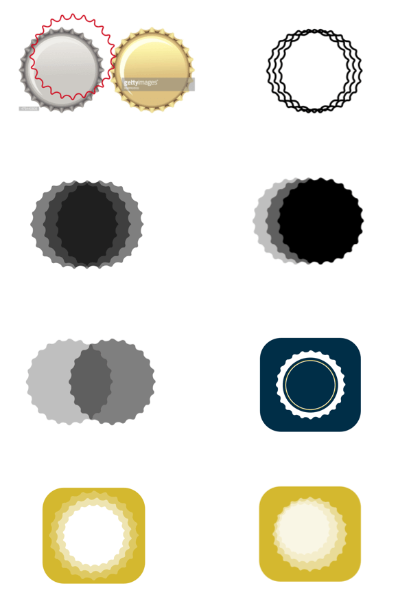
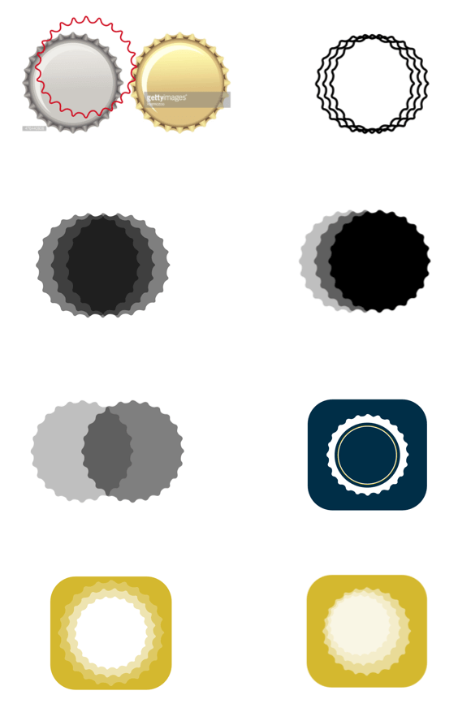

BREWSWAP
Social Network iOS Application
Available in the AppStoreCHALLENGE
Brewswap is an iOS app for beer traders. The client came to us with just an idea - he wanted to create a tool that would let people trade rare types of beer across authentic US breweries. To bring Brewswap to life we did everything from initial research to concept development to branding to interaction design to implementation. The app had to convey trust and be fun and engaging at the same time.
OUR APPROACH
We started with careful research of the area of application, potential competitors, and looked for inspiration to find out what sort of visual language we should use to speak to our target audience - male beer lovers/collectors in their 20-40s. We also conducted several brainstorming and ideation sessions as a team to narrow down the results of the research. As a result we came up with a few mood boards that we used to help our designers and developer to align their efforts.
The next step for us was coming up with the brand identity. Sketching ideas for the logo (that could be easily translated into an iOS icon) was the first thing we did. We wanted the logo to be be simple, modern and evoke the main concepts of the app - beer, beer trading, beer exchange - on a symbolic level.

We spoke to our client and together picked a few directions for logo design that we wanted to explore further. Having two bottles in an image seemed to remind us all of beer trading - a process that involves at least two participants.


We liked the direction where we were going with it but wanted to make the logo and the iOS icon much less literal and much more scalable. We needed a symbol that would remind people of a bottle of beer. After a long team discussion we came up with a bottle cap - we decided to go with it and started playing around with the concept.
 

After numerous various iterations we came up with the result - the final logo/iOS icon that satisfied both us and the client, symbolized beer and the process of exchanging beer and was scalable enough to be used in further potential brandind efforts. A bottle cap symbolizing a beer bottle and two bottle caps being swaped symbolizing the process of beer trading.

We considered a whole lot of fonts for the brand and tested various font combinations.

The analysis of the research results helped us come up up with the main font for the brand. We picked it Big Noodle for the display font and Trade Gothic Condensed for the body. The main target audience of the application (males of age 25 - 35) dictated the choice of bold heavy fonts. The vintage character of the main font speaks to the aspect of craft natural beer made at authentic breweries.


We also chose the main color palette. Looking at, taking pictures of and analyzing photos of different types of beer helped us pick a natural orange-brown that was reminiscent of the beer color as the main color of the Brewswap brand. We also chose it to be the light fun element of the app look. The offset color choice (navy blue) is counterbalancing the main color of the brand by adding the element of exclusiveness, trust, and stability.

After the branding was in place we moved on to designing the experience of the application. We came up with the main feature list for the MVP based on our research and conversations with potential users. The result was an engaging beer trading application that ensured trust and attracted hundreds of loyal users in the first few days of its existence.


MARKETING
We also helped our client with their initial marketing efforts and designed a marketing landing page for them where users could learn more about Brewswap and go from the website directly to the App Store to download the latest version.